Building a BookStore leveraging MicroServices.
Step by Step BookStore DevOps Project.
🚀 Project Overview
Our DevOps initiative will focus on constructing an AWS environment, setting up a Kubernetes cluster through Amazon Elastic Kubernetes Service (EKS), and implementing an efficient process for continuous integration and deployment.
To lay the groundwork, we'll utilize the Bookinfo demonstration application. This application, consisting of multiple services, serves as an illustration of the intricacies inherent in a contemporary Microservices architecture.
-
GitHub Actions: CI/CD platform integrated with GitHub for automating workflows.
-
AWS: Cloud services provider for hosting applications and managing infrastructure.
-
EKS: Amazon Elastic Kubernetes Service for deploying, managing, and scaling containerized applications.
-
ArgoCD: Declarative GitOps continuous delivery tool for Kubernetes.
-
Terraform: Infrastructure as Code (IaC) tool for provisioning and managing AWS resources.
-
ECR: Amazon Elastic Container Registry for securely storing and managing Docker images.
-
Grafana: Monitoring and visualization platform for metrics.
-
Prometheus: Open-source monitoring and alerting toolkit.
We Will try to cover more Technologies and concept in this Article as possible.
🔧 Problem Statement
In today's rapidly evolving tech landscape, mastering DevOps tools and technologies is a top priority for IT professionals seeking to streamline workflows, foster collaboration, and expedite project delivery. Many individuals dedicate significant time and effort to completing courses on essential tools such as Terraform, ArgoCD, Istio, Kubernetes, and AWS, equipping themselves with the theoretical knowledge needed to revolutionize their development processes.
However, what often remains unaddressed is the significant challenge that arises once the courses are completed and the real-world integration journey begins. The struggle of connecting the dots between these powerful tools and effectively implementing them into a cohesive DevOps pipeline can be both daunting and perplexing.
This is a narrative that many of us have encountered firsthand – the initial excitement of acquiring new skills, followed by the frustration of translating those skills into tangible results within our projects. This workshop aims to address this gap by offering a comprehensive guide not only on the 'how' of using these tools but also on the 'how' within the context of a holistic DevOps approach.
💽 Techonology Stack
● Application Integration: Simple Notification Service (SNS)
● Management & Governance: CloudWatch.
● Security, Identity & Compliance: Secret Manager, SonarCloud(SonarQube)
● CI/CD: Automate deployment using AWS Code Pipeline, AWS CodeBuild, AWS CodeCommit, AWS CodeArtifact
📌 Architecture Diagram
Microservices Diagram:

Technology Stack Diagram:
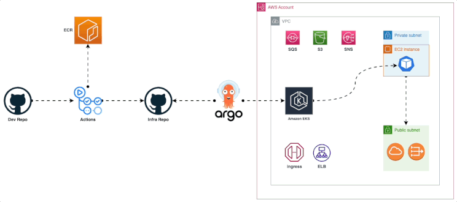
🚦 Getting Started
Prerequisites
Before you get started, make sure you have the following prerequisites in place:
- AWS account.
- AWS CLI.
- Docker.
- Git for cloning the repository.
- Any modern code editor (e.g., Visual Studio Code, Sublime Text, etc.)
To begin, you need an AWS account. If you don't have one, head to the AWS website and sign up for an account.
We need IAM user Access Key and Secret Key to be used with Terraform
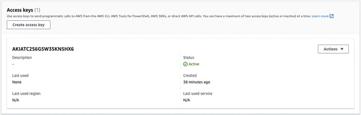
Never disclose your Access Keys to anyone, and consistently utilize Secrets Managers.
📋 Table of Contents
- Step-1: Clone the repository
- Step-2: Terraform Workflow
- Step-3: Terraform Cloud Env Vars
- Step-4: Install Required CLIs
- Step-5: Update Workflows with ECR URL
- Step-6: Update GitHub Repo with AWS Secrets
- Step-7: Deploy the Microservices Manifests
- Step-8: Istio Proxy uses Envoy
- Step-9: Test our BookStore Application
- Step-10: Monitoring
✨ Step-1-Clone-the-repository
- Please clone the project repository to your local machine. (You will need to be added to the CloudSpace organization before you can clone this.)
bash
git clone https://github.com/waleedmagdy/devops_project.git
🌟 Step-2-Terraform-Workflow
- In this workshop, we are using Terraform Cloud to let Terraform runs in a consistent and reliable environment.
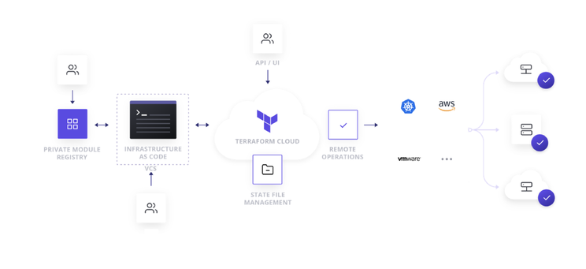
- First create an account on Terraform Cloud if you don’t have one.
Terraform Cloud Sign up (Terraform Cloud has a Free License so no need to worry about pricing)
- Create your first organization and then Set up a workspace in Terraform Cloud. This will help manage your infrastructure as code and enable collaboration.
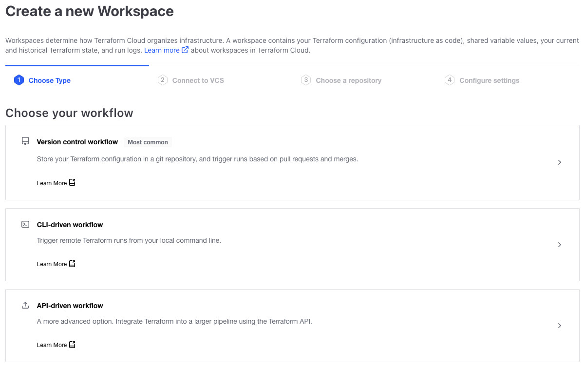
-
Choose Version Control Workflow to work with your repository on Github which we will choose to do here.
-
If you want to work with Terraform from your Terminal you can go for CLI-driven Workflow.
Version Control Workflow > Connect to Github > choose the repository > configure Setting
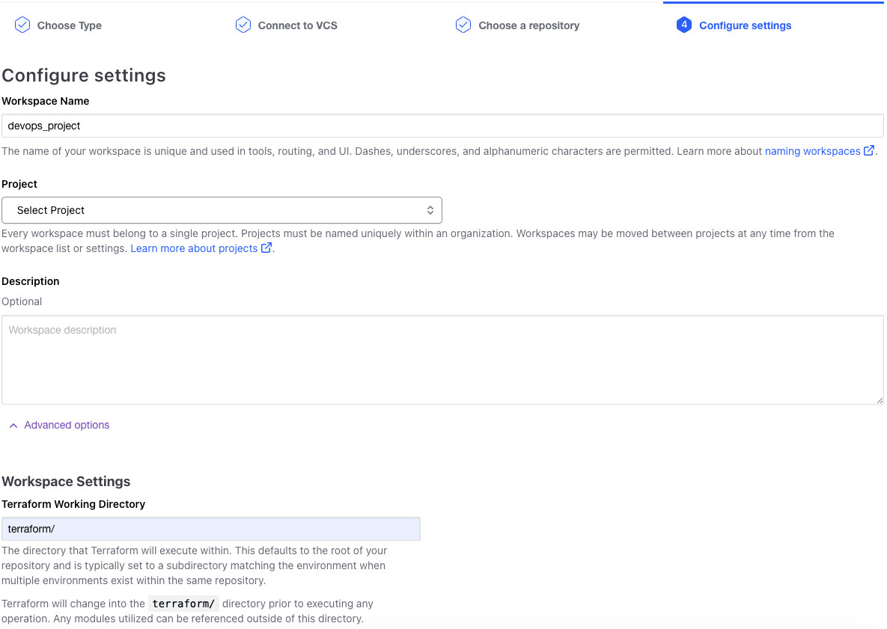
- In Advanced options configure the Terraform Working Directory terraform as our Terraform code is inside terraform directory
Before talking about the Terraform files, let's take time to read about Terraform — Best Practices terraform-best-practices and Terraform — Best Practices
Learn and Pick the right Terraform code Structure you need to follow.
Now let’s talk about the Terraform Directory before running our first plan and apply.
terraform.tf
This Terraform configuration block includes settings for Terraform Cloud (formerly known as Terraform Enterprise) and configures the AWS provider. Let's break down the code step by step:
1. Terraform Cloud Configuration:
terraform {
cloud {
organization = "devops-project-org"
workspaces {
name = "devops-project-workspace"
}
}
}
Let's breakdown the above code:
In this part of the code, you are configuring Terraform Cloud settings:
organization: The name of the Terraform Cloud organization is set to "devops-project-org".
workspaces: Within the organization, a workspace is configured with the name "devops-project-workspace". A workspace in Terraform Cloud is an isolated environment for managing infrastructure.
2. AWS Provider Configuration:
provider "aws" {
region = "us-east-1"
}
Let's breakdown the above code:
This part of the code configures the AWS provider using the provider block:
aws: The name of the provider is "aws", indicating that this block configures resources from Amazon Web Services (AWS).
region: The AWS region is set to "us-east-1", which means resources created using this provider will be located in the US East (North Virginia) region.
vpc.tf
This Terraform code snippet is used to create a Virtual Private Cloud (VPC) in Amazon Web Services (AWS) using the terraform-aws-modules/vpc/aws module. Let's break down the code step by step:
1. Module Declaration:
module "vpc" {
source = "terraform-aws-modules/vpc/aws"
}
Here, you are declaring a Terraform module named "vpc" using the module source terraform-aws-modules/vpc/aws. This module is available in the Terraform registry and is designed to create a VPC with AWS resources.
2. Module Parameters:
name = "my-vpc"
cidr = "10.0.0.0/16"
These parameters define the basic configuration of the VPC:
name: The name of the VPC will be set to "my-vpc". cidr: The IP range for the VPC is set to "10.0.0.0/16".
3. Availability Zones and Subnets:
azs = ["us-east-1a", "us-east-1b", "us-east-1c"]
private_subnets = ["10.0.1.0/24", "10.0.2.0/24", "10.0.3.0/24"]
public_subnets = ["10.0.101.0/24", "10.0.102.0/24", "10.0.103.0/24"]
These parameters specify the availability zones and subnets for the VPC:
azs: The list of Availability Zones where the subnets will be created.
private_subnets: The list of private subnet CIDR blocks.
public_subnets: The list of public subnet CIDR blocks.
4. NAT and VPN Gateways:
enable_nat_gateway = true
enable_vpn_gateway = true
These settings enable NAT and VPN gateways for the VPC:
enable_nat_gateway: NAT gateways will be created for the private subnets.
enable_vpn_gateway: A VPN gateway will be created for the VPC.
5. Tags:
enable_nat_gateway = true
enable_vpn_gateway = true
This block assigns tags to the resources created by the module. Tags are metadata that provide additional information about resources. Here, two tags are added: "Terraform" with the value "true" and "Environment" with the value "dev".
ecr.tf:
This Terraform code snippet creates an Amazon Elastic Container Registry (ECR) repository and defines an output to display the repository URL. Let's break down the code step by step:
1. ECR Repository Resource:
resource "aws_ecr_repository" "my_repo" {
name = "my-ecr-repo"
image_tag_mutability = "MUTABLE"
}
In this part of the code, you are creating an AWS ECR repository named "my-ecr-repo" using the aws_ecr_repository resource. The parameters you've set are:
name: The name of the ECR repository is set to "my-ecr-repo".
image_tag_mutability: The mutability of image tags is set to "MUTABLE", which means you can overwrite tags on images.
2. Output for Repository URL:
output "repository_url" {
value = aws_ecr_repository.my_repo.repository_url
}
This part of the code defines an output named "repository_url" that will display the URL of the ECR repository. The value of this output is set to the repository URL of the aws_ecr_repository.my_repo resource.
eks.tf:
This Terraform code is used to create an Amazon Elastic Kubernetes Service (EKS) cluster using the terraform-aws-modules/eks/aws module. Let's break down the code step by step:
1. Module Declaration:
module "eks" {
source = "terraform-aws-modules/eks/aws"
version = "~> 19.0"
}
This declares a Terraform module named "eks" and specifies the source from which to fetch the EKS module (terraform-aws-modules/eks/aws) along with a version constraint.
2. Cluster Configuration:
cluster_name = "my-cluster"
cluster_version = "1.27"
cluster_endpoint_public_access = true
These parameters configure the EKS cluster:
cluster_name: The name of the EKS cluster will be set to "my-cluster". cluster_version: The Kubernetes version of the cluster will be "1.27". cluster_endpoint_public_access: The Kubernetes API server endpoint will have public access.
3. Cluster Addons:
cluster_addons = {
coredns = { most_recent = true }
kube-proxy = { most_recent = true }
vpc-cni = { most_recent = true }
}
This block configures cluster addons like CoreDNS, kube-proxy, and vpc-cni to use the most recent versions.
4. VPC and Subnet Configuration:
vpc_id = module.vpc.vpc_id
subnet_ids = module.vpc.private_subnets
control_plane_subnet_ids = module.vpc.public_subnets
These parameters specify the Virtual Private Cloud (VPC) and subnet details for the EKS cluster using outputs from another module (likely named "vpc").
5. Managed Node Group Configuration:
eks_managed_node_group_defaults = {
instance_types = ["m6i.large", "m5.large", "m5n.large", "t3.large"]
}
eks_managed_node_groups = {
green = {
use_custom_launch_template = false
min_size = 1
max_size = 10
desired_size = 1
instance_types = ["t3.large"]
capacity_type = "SPOT"
}
}
This section configures an EKS managed node group named "green" with specific instance types, sizes, and capacity type (SPOT).
6. Fargate Profiles:
fargate_profiles = {
default = {
name = "default"
selectors = [ { namespace = "default" } ]
}
}
This section defines a Fargate profile named "default" that targets the "default" namespace.
aws-auth Configuration: This section defines how IAM roles, users, and accounts will be mapped to Kubernetes RBAC roles for cluster access.
7. Tags:
```bash tags = { Environment = "dev" Terraform = "true" }
Tags are assigned to the created resources for organization and identification purposes.
## 🚀 Step-3-Terraform-Cloud-Env-Vars
We need to configure our organization with our Access Key and Secret Key and you can do it specific for the workspace or globally for the organization.
We will do it globally now for the organization by creating Variable Set
under the organization setting go to Variable sets and Create new one

**1. Plan and Apply Terraform Code**:
Now we are ready to start the Plan

Review the Plan resources and then **Confirm & Apply**
**2. Check AWS Resources Creation**:
Verify in the AWS Management Console that your defined resources have been created as intended.
**3. Deploy EKS-Manage EC2 Instance**:
Of course it doesn’t have to be an EC2 instance you can use your Terminal.
We will setup this instance to manage our EKS cluster from.
- Deploy ubuntu instance
- Install tools like **kubectl** (Kubernetes command-line tool), **aws-cli** (AWS Command Line Interface), and any other utilities you might need.
- Install aws-cli
```bash
sudo apt install unzip
curl "<https://awscli.amazonaws.com/awscli-exe-linux-x86_64.zip>" -o "awscliv2.zip"
unzip awscliv2.zip
sudo ./aws/install
aws --version
- Install kubectl
curl -LO "<https://dl.k8s.io/release/$>(curl -L -s <https://dl.k8s.io/release/stable.txt>)/bin/linux/amd64/kubectl"
Kubectl
curl -LO "<https://dl.k8s.io/$>(curl -L -s <https://dl.k8s.io/release/stable.txt>)/bin/linux/amd64/kubectl.sha256"
echo "$(cat kubectl.sha256) kubectl" | sha256sum --check
sudo install -o root -g root -m 0755 kubectl /usr/local/bin/kubectl
kubectl version --client
-
Configure AWS Credentials
-
Run aws configure and provide your AWS Access Key ID, Secret Access Key, default region, and output format.
-
Configure kubectl
aws eks update-kubeconfig --name my-cluster --region us-east-1
- Test kubectl by running
kubectl get nodes
connect: connection refused
"Not working" 😕
You need to troubleshoot why kubectl client can’t talk with the EKS endpoint
Hint: Something is blocking the requests to the EKS endpoint
Now after You can talk to our EKS, you should add this fix to our Terraform code.
Now you can run
kubectl get nodes
##OUTPUT##
NAME STATUS ROLES AGE VERSION
ip-10-0-1-149.ec2.internal Ready <none> 64s v1.27.3-eks-a5565ad
💽 Step-4-Install-Required-CLIs
We installed the AWS CLI, kubectl Now we need to install istioctl and argo CLI and install the required k8s resources.
- istioctl
curl -L <https://istio.io/downloadIstio> | sh -
cd istio-1.18.2/
export PATH=$PWD/bin:$PATH
istioctl install --set profile=demo -y
istioctl is a command-line utility provided by Istio for installing and interacting with Istio deployments.
install is the subcommand used to install Istio components.
-set profile=demo specifies the installation profile. The "demo" profile includes a set of Istio components suitable for demonstration purposes.
- argo CLI
curl -sSL -o argocd-linux-amd64 <https://github.com/argoproj/argo-cd/releases/latest/download/argocd-linux-amd64>
sudo install -m 555 argocd-linux-amd64 /usr/local/bin/argocd
rm argocd-linux-amd64
sudo install -m 555 argocd-linux-amd64 /usr/local/bin/argocd
- Argo CD install
kubectl create namespace argocd
kubectl apply -n argocd -f <https://raw.githubusercontent.com/argoproj/argo-cd/stable/manifests/install.yaml>
kubectl patch svc argocd-server -n argocd -p '{"spec": {"type": "LoadBalancer"}}'
kubectl patch svc argocd-server -n argocd -p '{"spec": {"type": "LoadBalancer"}}' This command patches (updates) the Argo CD server service to change its service type to a LoadBalancer. This modification makes the Argo CD server accessible from outside the Kubernetes cluster via a load balancer's public IP address or DNS.
- Argo CD intial admin secret
bash
argocd admin initial-password -n argocd
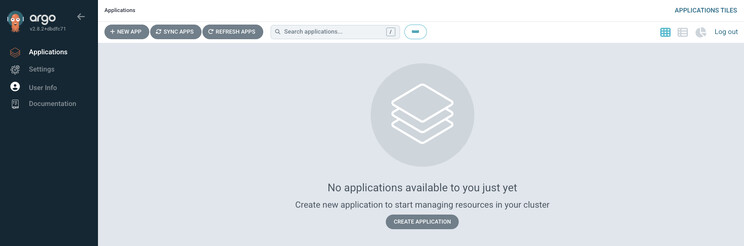
It’s not a best practice to do it from the Terminal but I will give you a hint “Terrafrom”
🔧 Step-5-Update-Workflows-with-ECR-URL
Modify your continuous integration workflows to include the ECR repository URL for Container image storage.
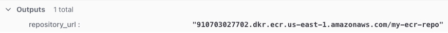
Under .github/workflows/ you will find the Github Actions we will use to build/push our container images let’s break one workflow down.
details_workflow.yml :
Workflow Name and Trigger:name: Details Service Build, Push and Deploy: Describes the name of the workflow.
on: Specifies the events that trigger the workflow.
workflow_dispatch: Allows manual triggering of the workflow.
push: Triggers the workflow when code changes are pushed to the repository's specified paths.
Environment Variables:env: Defines environment variables that will be available to the workflow steps.
ECR_REGISTRY: Specifies the Amazon ECR (Elastic Container Registry) registry URL.
ECR_REPOSITORY: Specifies the ECR repository name.
Jobs:jobs: Contains one or more jobs to be executed in sequence.
build_and_push_image: Describes a job named "build_and_push_image" that runs on an Ubuntu environment.
runs-on: Specifies the type of runner environment.
steps: Lists the individual steps within the job.
Steps:A series of steps, each with a specific name, purpose, and associated actions.
uses refers to pre-built GitHub Actions that perform specific tasks.
Here's what each step does:
Checkout code: Retrieves the repository's code using the actions/checkout GitHub Action.
Configure AWS credentials: Configures AWS credentials to access the ECR registry.
Login to Amazon ECR: Uses the aws-actions/amazon-ecr-login GitHub Action to log in to the ECR registry.
Get short SHA: Retrieves the short SHA hash of the latest Git commit.
Build and push Docker image: Builds a Docker image and pushes it to the specified ECR repository.
Update Kubernetes Deployment Image: Updates the image tag in a Kubernetes deployment YAML file to match the built Docker image.
Commit and Push Changes: Commits the changes made to the Kubernetes deployment YAML file and pushes them to the repository.
🚀 Step-6-Update-GitHub-Repo-with-AWS-Secrets
under Setting > Secrets and Variables > Actions
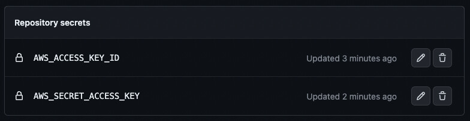
Run Workflows
Let’s the party begins
-
as we are using one repository we need our Github Workflow to update the new image
-
we should configure the Actions to be able to Read and Write to it’s repository
-
under Setting > Actions > General
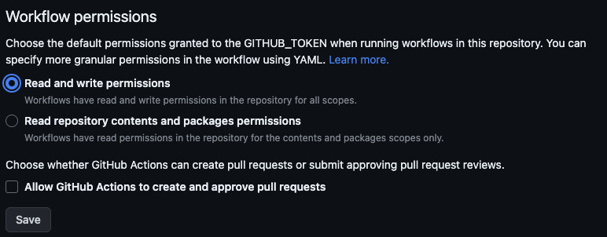
The Workflows Will run if there is a push inside the services directories or manually, I will run them Manually Now.
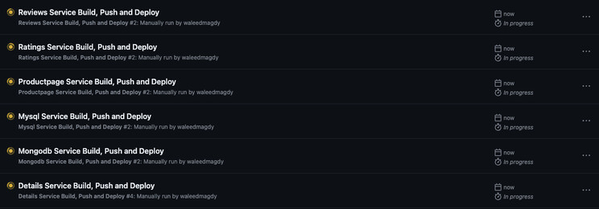
You will find that I only added the Update Kubernetes Deployment Image part to details_workflow.yml
You need to complete the other Workflows
You need to check the manifests/kubernetes image part to mach it with the Workflows
Check ECR Repo
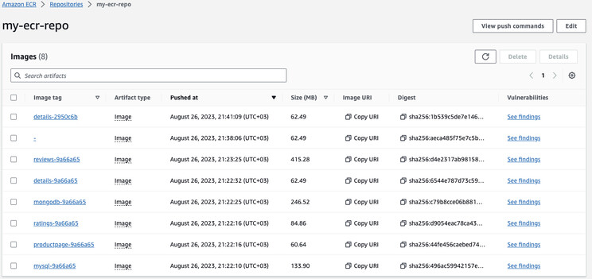
Argo CD
- add the repository to argo cd
- I will do it VIA SSH
- add the public ssh key to you Github account setting
- add the private ssh key to the argocd repository connect page

- deploy Namespaces to the cluster staging and monitoring
- under manifests/networking/namespaces/ Add NEW APP in the argocd homepage
- follow the configuration
- Path: manifests/networking/namespaces/
- you can keep the Namespace field blank
💼 Step-7-Deploy-the-Microservices-Manifests
-
under argocd/apps/services you will find Application CRD for argocd app to deploy our manifest resources to Kubernetes
-
argocd homepage create NEW APP
-
Application Name: app-services
-
Project Name: default
-
Sync Policy: Automatic
-
[x] PRUNE RESOURCES
-
[x] SELF HEAL
-
[x] AUTO-CREATE NAMESPACE
-
Repository URL:
-
Path: argocd/apps /services/
-
Cluster URL:
-
Namespace: staging
You can check the Argo CD home page also you can check the resources in the EKS on AWS Console
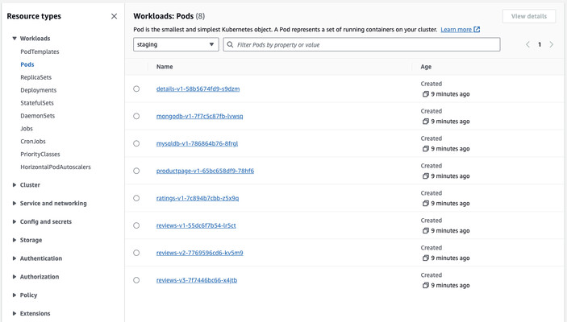
If you check any POD in staging Namespace you will find that each one has two Containers
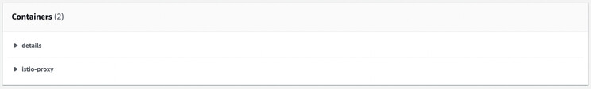
🔒 Step-8-Istio-Proxy-uses-Envoy
Envoy proxies are deployed as sidecars to services, logically augmenting the services with Envoy’s many built-in features, for example:
-
Dynamic service discovery
-
Load balancing
-
TLS termination
-
HTTP/2 and gRPC proxies
-
Circuit breakers
-
Health checks
-
Staged rollouts with %-based traffic split
-
Fault injection
-
Rich metrics
Istio Gateways and VirtualServices:
-
Istio Gateway: An Istio Gateway is a configuration resource that describes how external traffic (e.g., traffic from outside the Kubernetes cluster) is brought into the service mesh and how it's routed to services. It acts as an entry point into the mesh for incoming traffic. Gateways can be used to manage different protocols, such as HTTP, HTTPS, or TCP, and they can handle traffic based on hostnames, paths, and ports.
-
Hosts and Ports: A Gateway is configured with a set of hosts and ports that it listens on. These could be domain names (for HTTP/HTTPS) or IP addresses and port numbers (for TCP).
-
TLS Termination: Gateways can perform TLS termination, meaning they can handle SSL/TLS encryption and decryption for incoming traffic.
-
Virtual Services: Gateways are often associated with VirtualServices to define how incoming traffic should be forwarded to specific services.
-
Istio VirtualService: A VirtualService is a configuration resource that defines how traffic should be routed within the service mesh. It allows you to control the routing of traffic based on criteria like URI paths, headers, and more. VirtualServices are associated with one or more Istio Services and are often used in conjunction with Gateways to control how external traffic is routed to services.
-
Destination Rules: VirtualServices can refer to DestinationRules, which define how traffic should be load-balanced between different versions of a service (canary deployments, blue-green deployments, etc.).
- Traffic Splitting: VirtualServices can split traffic between different versions of services based on weights or other criteria.
- Match Conditions: VirtualServices define match conditions that determine which traffic is affected by the rules defined within them.
- Fault Injection: VirtualServices can also be used to inject faults or delays into requests for testing purposes.
Deploy Gateways and VirtualServices
- under manifests/networking/gateways Create Argo CD app to deploy them
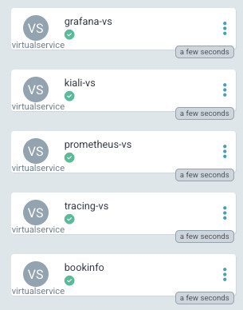
🗄️ Step-9-Test-our-BookStore-Application
- From the previous step you can browse to istio-ingressgateway url/productpage
- To get the url
bash
kubectl get services -n istio-system
NAME TYPE CLUSTER-IP EXTERNAL-IP PORT(S) AGE
istio-ingressgateway LoadBalancer 172.20.27.197 ae271cd157c214ab888061809021225a-1922516608.us-east-1.elb.amazonaws.com 15021:32042/TCP,80:30092/TCP,443:31659/TCP,31400:31529/TCP,15443:32377/TCP 148m
It will be the elb/dns under External-IP. We will open the application on our browser using that same link.
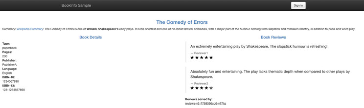
💻 Step-10-Monitoring
Under argocd/apps/observability Create NEW APP in monitoring Namespace
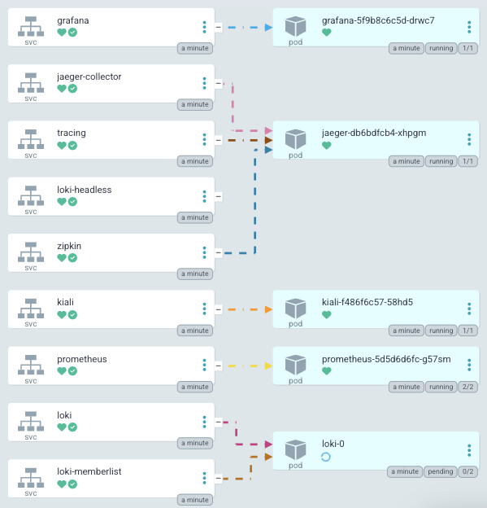
We have Prometheus (Metrics Datastore), Loki (Logging), Jaeger (Tracing) In a short words
-
Logging: Recording events and activities for troubleshooting.
-
Metrics: Measuring performance with numbers and graphs.
-
Tracing: Following data flow to find performance issues.
Grafana
one of a many dashboard you can import and a lot to explore
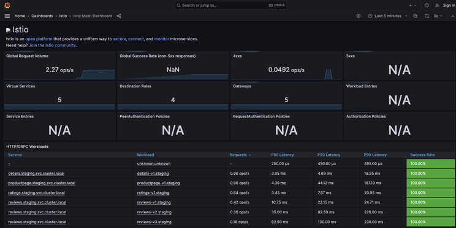
Kiali
A comprehensive monitoring tool for Istio Service Mesh and also there is a lot to explore.
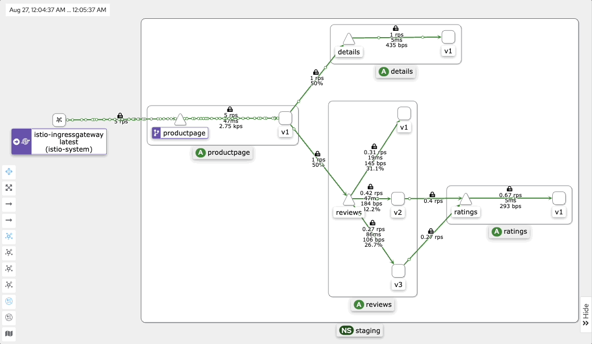
The dashboard can give you a Live fast response to any issue the could happen to any of your Microservice

📄 License
This project is licensed under the MIT License.